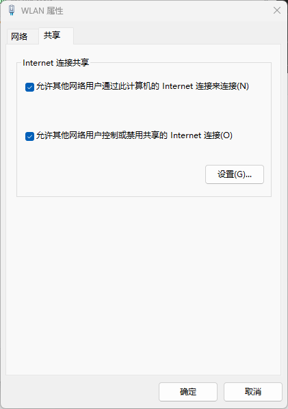

版权信息
warning
本文章为博主原创文章。遵循 CC 4.0 BY-SA 版权协议，转载请附上原文出处链接和本声明。
本文旨在记录自己的IMX6ULL开发板上位机连接的过程。
为什么感觉是后端这一块呢？
1. 前提条件
- 装有Debian/Ubuntu系统的、安装了ssh服务的、带有网络设备及驱动的开发板
- MobaXterm工具
- 目前使用的上位机是Win11平台，后续再研究Linux平台。
2. 基本操作
2.1. 查询设备网络连接状态及ip地址
ifconfig 命令
2.2. 连接测试
ping 命令
2.3. 动态分配ip/主动申请ip地址
udhcpc -i eth0udhcpc
- 全称是 Micro DHCP Client，是 BusyBox 提供的一个轻量级 DHCP 客户端工具。
- 它会向局域网里的 DHCP 服务器（比如路由器、主机上的 Internet Connection Sharing 服务）发送请求，请求一个 IP 地址。
-i eth0
- 指定要使用的网络接口，这里是
eth0（开发板上的以太网网卡）。 - 如果你用的是其他网卡（比如
eth1或enp0s3），需要改成对应名字。
成功的话，它会显示类似：
udhcpc: sending discover
udhcpc: sending select for 192.168.137.2
udhcpc: lease of 192.168.137.2 obtained, lease time 86400这表示网卡已经从 DHCP 服务器那里拿到了 IP（这里是 192.168.137.2）。如果没有 DHCP 服务器响应，就会一直 sending discover，说明没有可分配 IP。
2.4. 手动设置设备ip地址
ifconfig eth0 192.168.10.2 netmask 255.255.255.0 upup 指启用
2.5. 查询ssh是否开启
sudo systemctl status ssh2.6. 开启ssh服务
systemctl start ssh或
/etc/init.d/ssh start2.7. ssh远程连接
ssh [username]@[ip-addr/hostname]2.8. 通过MobaXterm连接
填好即可。
hostname 可以输入同名指令查看。
3. 方式一：无线网络连接
“优点”：无线通信。
“缺点”：延迟可能较高。
3.1. 同一网络下
在同一网段下（连接同一个WIFI），通过ssh建立连接。简简单单。
3.2. 不同网络下
待补充。
4. 方式二：通过网线与Win电脑连接
“优点”：延迟低。
“缺点”：有线通信。
4.1. 点对点通信（无需共享电脑网络）
“优点”：操作简单。
“缺点”：开发板不能共享电脑网络。
将开发板网口和电脑网口用网线连接，进入电脑网络和Internet设置，选择以太网
ip分配改为手动，ip地址可以分配为192.168.10.1
掩码为255.255.255.0
开发板端同样指定ip地址和掩码，须在同一网段，例如192.168.10.7 。这样两个设备就能互相找到了。
再在电脑上进行ping测试。能ping通用ssh/MobaXterm连接即可。
4.2. 点对点通信并共享电脑网络（电脑成网关）
“优点”：开发板不仅可以与电脑建立通信，还能共享电脑网络。
“缺点”：操作较复杂。
电脑通过wifi连接网络，通过以太网接口连接开发板。
在电脑控制面板>网络和Internet>网络和共享中心 右侧更改适配器设置，双击无线网卡设备（连接网络的那个设备）选择属性> 共享选项卡 勾选

提示：

意思是：当该功能被启用时，你的LAN口 ip地址 自动被设置为 192.168.137.1，要通过这个LAN口连接网络的设备需将自己ip地址设置为动态获取，也就是在开发板执行前面的动态获取ip地址的命令。
当开发版成功获取到ip地址（见基本操作节 分配ip地址）后，则可以正常建立连接。